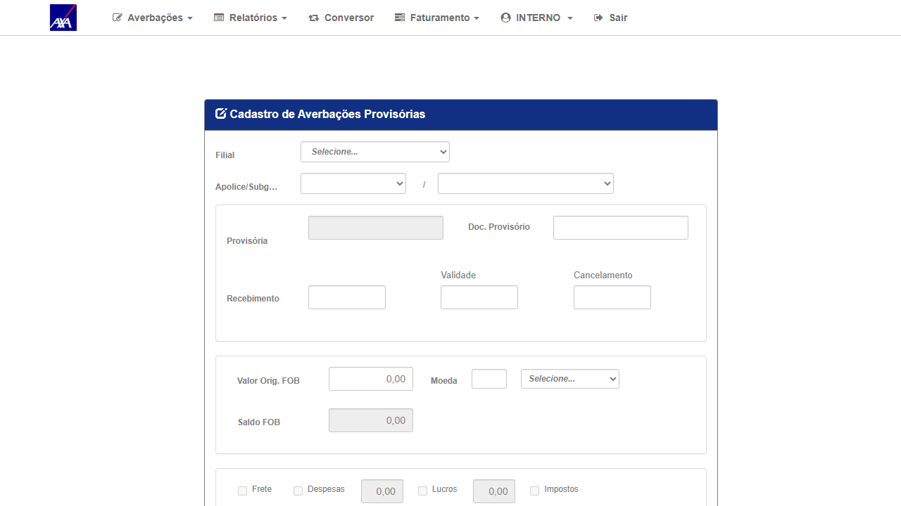
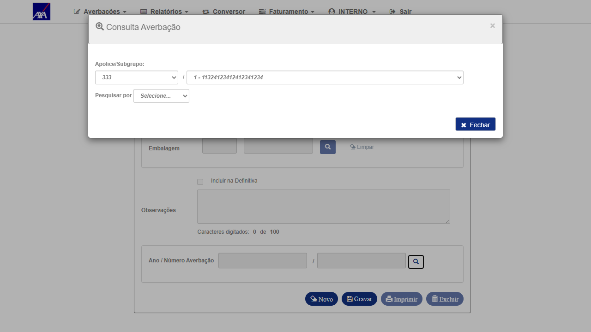
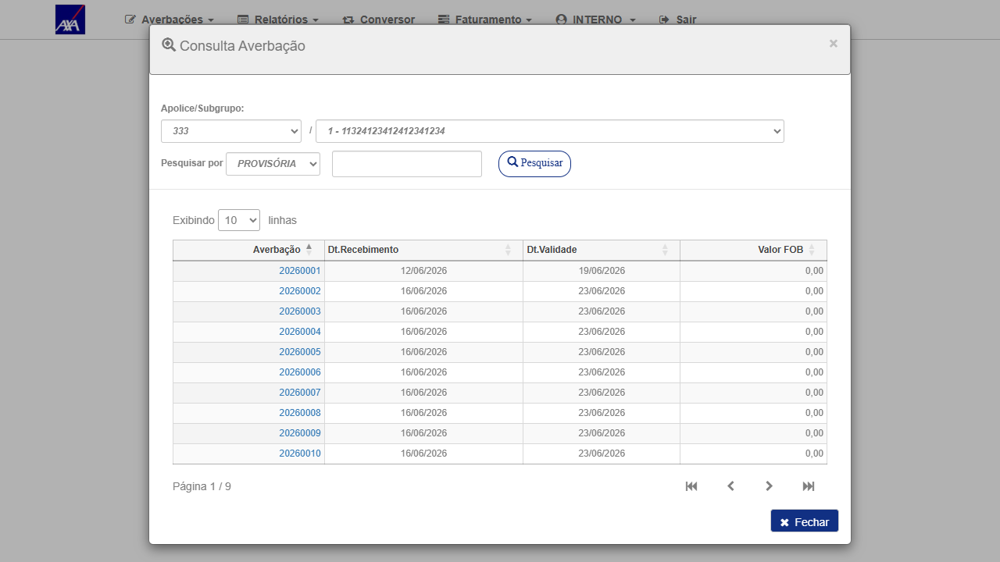

Contexto do Bug
Problema original: Ao acessar o cadastro de Averbações Provisórias no CITNET AXA ALFA, ao abrir o modal "Consulta Averbação", selecionar "PROVISÓRIA" e clicar em Pesquisar, a grid retornava vazia mesmo com registros existentes para a apólice/subgrupo selecionados.
Correção aplicada (Allan Rodrigo Bluemond — 19/06/2026): Fix publicado em HML. A consulta agora retorna corretamente as averbações provisórias cadastradas, exibindo grid paginada com todos os registros disponíveis.
Critério de Aceite: Exibir corretamente as averbações provisórias cadastradas na consulta/pesquisa do modal "Consulta Averbação".
Massa de Dados
| Campo | Valor |
|---|---|
| Ambiente | https://axa-hml-faturamento.nsseg.com.br/alfa/citnet/ |
| Usuário | interno / 11 |
| Filial | 1 - SAO PAULO |
| Apólice | 333 |
| Subgrupo | 1 - 11324123412412341234 |
| Tipo pesquisa | PROVISÓRIA |
| Averbação selecionada | 20260001 |
Casos de Teste
CT-001
Pesquisa por PROVISÓRIA no modal Consulta Averbação deve retornar registros
Perfil: Interno
✓ APROVADO
▶
1Acessar CITNET AXA ALFA HML e realizar login com usuário interno / 11
2No menu principal, acessar Averbações → Importação-Provisória (Internacional)
3Selecionar Filial: 1 - SAO PAULO, Apólice: 333, Subgrupo: 1 - 11324123412412341234
4Rolar até a seção "Ano / Número Averbação" e clicar no ícone de lupa (btModalProvisoria) para abrir o modal "Consulta Averbação"
5No modal, selecionar PROVISÓRIA no campo "Pesquisar por"
6Clicar no botão Pesquisar
▶ Resultado Esperado
Grid com averbações provisórias cadastradas para a apólice/subgrupo selecionados — paginada, com colunas: Averbação, Dt.Recebimento, Dt.Validade, Valor FOB.
✓ Resultado Obtido
Grid exibida com 10 registros na página 1/9: averbações 20260001 a 20260010, com datas de recebimento e validade preenchidas. Bug corrigido.
Evidências

01 - Home CITNET ALFA

02 - Tela Importação Provisória

03 - Modal aberto

04 - Grid de resultados ✓
Resumo de Execução
✓ Todos os cenários aprovados (2/2 — 100%)
O fix de Allan Rodrigo Bluemond (publicado em 19/06/2026) corrigiu a pesquisa de averbações provisórias no modal "Consulta Averbação". A grid agora retorna todos os registros cadastrados para o subgrupo/apólice informados, com paginação funcional (9 páginas para a apólice 333). A seleção de um item da grid preenche o formulário corretamente.
O fix de Allan Rodrigo Bluemond (publicado em 19/06/2026) corrigiu a pesquisa de averbações provisórias no modal "Consulta Averbação". A grid agora retorna todos os registros cadastrados para o subgrupo/apólice informados, com paginação funcional (9 páginas para a apólice 333). A seleção de um item da grid preenche o formulário corretamente.
Tags
BUG
Averbação Provisória
CITNET
AXA ALFA
Internacional